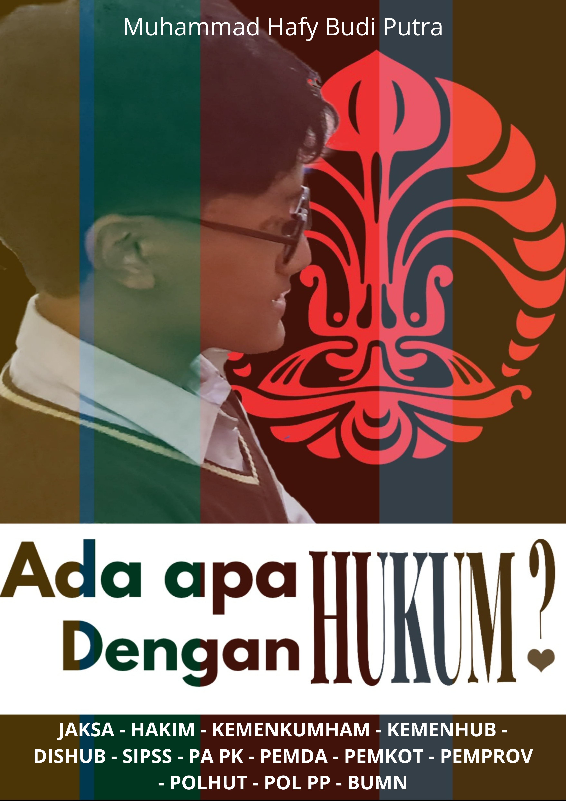

PERSONAL PROFILE & SELECTED WORKS

STUDENT | WEB DEVELOPMENT ENTHUSIAST
Saya adalah seorang pelajar yang memiliki ketertarikan pada teknologi dan pengembangan web. Saat ini, saya sedang mendalami HTML dan CSS untuk memahami bagaimana sebuah website dirancang dan dikembangkan. Melalui proses belajar dan berbagai proyek, saya ingin terus mengembangkan kemampuan, mengeksplorasi ide baru, serta menghasilkan karya yang bermanfaat.
Mata pelajaran yang saya pelajari dan kembangkan selama menempuh pendidikan di SMA.
Mampu memahami konsep matematika, melakukan perhitungan, dan menyelesaikan soal.
Contoh penguasaan: 80%
Mampu memahami bacaan, menulis teks, dan menyampaikan pendapat dengan baik.
Penguasaan: 85%
Mampu memahami kosakata, membaca teks, dan melakukan percakapan sederhana.
Penguasaan: 98%
Memahami dasar komputer, algoritma, serta membuat halaman web dengan HTML dan CSS.
Penguasaan: 90%
Berikut beberapa proyek dan karya yang saya kerjakan selama belajar di SMA.
INFORMATIKA
Membuat website yang menampilkan projek pribadi di bidang coding dan simulasi arduino
Kemampuan: Coding dan pemahan pin serta fungsi arduino.
Lihat ProyekTerima kasih sudah mengunjungi portofolio saya. Mari terhubung dan berbagi ide bersama!
💬 WhatsApp Chat langsung dengan saya 📸 Instagram Lihat aktivitas dan karya saya ✉️ Email Kirim pesan melalui email© 2026 Muhammad Hafy Budi Putra | Portofolio Pribadi